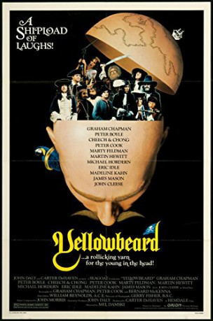
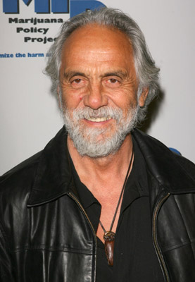

#8949 Kapitän Dotterbart
Alternativ: Yellowbeard
 
 IMDB-Wertung: 6.0 / 10
IMDB-Wertung: 6.0 / 10  Metascore: 0
Metascore: 0 
Yellowbeard, a pirate's pirate, is allowed to escape from prison to lead the authorities to his treasure. He finds that his wife neglected to tell him that he now has a son, 20, and shame of shame, an intellectual. The British Navy, Yellowbeard, his son, and members of Yellowbeard's old crew all go after the treasure.
Jahr: 1983
Dauer: 92 Minuten
FSK: 16
Land: England Studio: VCL CommunicationsTonspuren: DD2.0 - ,
Untertitel: Deutsch,
Auflösung: 1080p (1920x1040) Größe: 8591 MB
Genre: Action, Komödie, Abenteuer
Regisseur: Mel Damski
Drehbuch: Graham Chapman
Soundtrack: John Morris
Darsteller:
 Graham Chapman als Yellowbeard
Graham Chapman als Yellowbeard Peter Boyle als Moon
Peter Boyle als Moon Cheech Marin als El Segundo
Cheech Marin als El Segundo-  Tommy Chong als El Nebuloso
 Peter Cook als Lord Lambourn
Peter Cook als Lord Lambourn- Marty Feldman als Gilbert
- Martin Hewitt als Dan
 Michael Hordern als Dr. Gilpin
Michael Hordern als Dr. Gilpin Eric Idle als Commander Clement
Eric Idle als Commander Clement Madeline Kahn als Betty
Madeline Kahn als Betty James Mason als Captain Hughes
James Mason als Captain Hughes John Cleese als Blind Pew
John Cleese als Blind Pew Kenneth Mars als Mr. Crisp and Verdugo
Kenneth Mars als Mr. Crisp and Verdugo- Spike Milligan als Flunkie
- Stacey Nelkin als Triola
- Nigel Planer als Mansell
 Susannah York als Lady Churchill
Susannah York als Lady Churchill- Beryl Reid als Lady Lambourn
 Ferdy Mayne als Mr. Beamish
Ferdy Mayne als Mr. Beamish- John H. Francis als Chaplain
- Peter Bull als Queen Anne
 Bernard Fox als Tarbuck
Bernard Fox als Tarbuck Ronald Lacey als Man with Parrot
Ronald Lacey als Man with Parrot- Greta Blackburn als Mr. Prostitute
 Nigel Stock als Admiral
Nigel Stock als Admiral- Kenneth Danziger als Mr. Martin
 David Bowie als The Shark (uncredited)
David Bowie als The Shark (uncredited)- Monte Landis als Prison Guard
- Richard Wren als Pirate
- Gillian Eaton als Rosie
- Bernard McKenna als Askey
- John Dair als Big John
- Carlos Romano als Priest
- Álvaro Carcaño als Beggar
- Leopoldo Francés als Helmsman
- Ava Harela als Flower Girl
- Garry O'Neill als Sergeant of the Marines
- George Lane Cooper als
- Carlos East als Swashbuckler (uncredited)
- Michael Mileham als The Coxswain (uncredited)
Datei: X:\1983\Kapitän Dotterbart (1983, FSK16, 1920x1040).mkv seit 16.05.2018
Festplatte: HD 1980-1986
 Es gibt insgesamt 35 Filme in der Gruppe '1983'
Es gibt insgesamt 35 Filme in der Gruppe '1983'